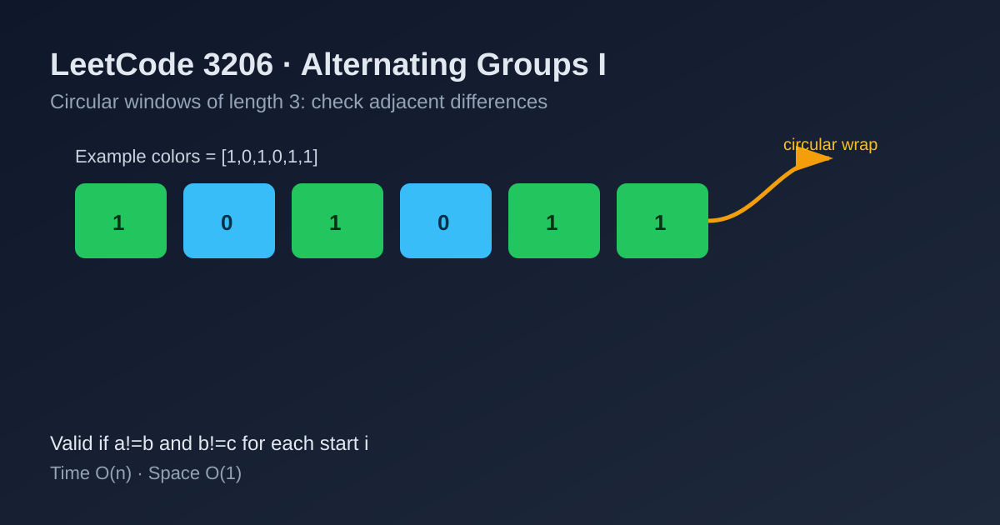

LeetCode 3206: Alternating Groups I (Circular Triplet Pattern Check)
LeetCode 3206ArraySimulationCircular ArrayToday we solve LeetCode 3206 - Alternating Groups I.
Source: https://leetcode.com/problems/alternating-groups-i/

English
Problem Summary
You are given a circular binary array colors where each value is 0 or 1. A length-3 consecutive group is alternating if adjacent values inside the group are different. Return how many such groups exist.
Key Insight
For each start index i, the 3-length window is alternating iff:
colors[i] != colors[i+1] and colors[i+1] != colors[i+2] (indices taken modulo n).
Because the array is circular, there are exactly n candidate windows.
Brute Force and Limitations
Enumerating each window and checking all adjacent pairs is already small (window length is fixed to 3). This is effectively optimal with linear complexity in n.
Optimal Algorithm Steps
1) Let n = colors.length, ans = 0.
2) For each i from 0 to n-1, compute a=colors[i], b=colors[(i+1)%n], c=colors[(i+2)%n].
3) If a != b and b != c, increment ans.
4) Return ans.
Complexity Analysis
Time: O(n).
Space: O(1).
Common Pitfalls
- Forgetting circular wrap-around for i+1 and i+2.
- Mistakenly requiring a != c (not required for alternating adjacency).
- Iterating only to n-3 and missing circular-start windows near the end.
Reference Implementations (Java / Go / C++ / Python / JavaScript)
class Solution {
public int numberOfAlternatingGroups(int[] colors) {
int n = colors.length;
int ans = 0;
for (int i = 0; i < n; i++) {
int a = colors[i];
int b = colors[(i + 1) % n];
int c = colors[(i + 2) % n];
if (a != b && b != c) ans++;
}
return ans;
}
}func numberOfAlternatingGroups(colors []int) int {
n := len(colors)
ans := 0
for i := 0; i < n; i++ {
a := colors[i]
b := colors[(i+1)%n]
c := colors[(i+2)%n]
if a != b && b != c {
ans++
}
}
return ans
}class Solution {
public:
int numberOfAlternatingGroups(vector<int>& colors) {
int n = (int)colors.size();
int ans = 0;
for (int i = 0; i < n; ++i) {
int a = colors[i];
int b = colors[(i + 1) % n];
int c = colors[(i + 2) % n];
if (a != b && b != c) ++ans;
}
return ans;
}
};class Solution:
def numberOfAlternatingGroups(self, colors: List[int]) -> int:
n = len(colors)
ans = 0
for i in range(n):
a = colors[i]
b = colors[(i + 1) % n]
c = colors[(i + 2) % n]
if a != b and b != c:
ans += 1
return ansvar numberOfAlternatingGroups = function(colors) {
const n = colors.length;
let ans = 0;
for (let i = 0; i < n; i++) {
const a = colors[i];
const b = colors[(i + 1) % n];
const c = colors[(i + 2) % n];
if (a !== b && b !== c) ans++;
}
return ans;
};中文
题目概述
给你一个环形二进制数组 colors（元素只有 0/1）。长度为 3 的连续分组如果相邻元素都不同，就称为交替组。返回交替组数量。
核心思路
对每个起点 i，只需要检查：
colors[i] != colors[i+1] 且 colors[i+1] != colors[i+2]（下标对 n 取模）。
因为是环形数组，一共有 n 个长度为 3 的候选窗口。
暴力解法与不足
本题窗口长度固定为 3，逐窗口检查已经是线性复杂度，足够高效，不需要更复杂结构。
最优算法步骤
1）设 n = colors.length，ans = 0。
2）遍历 i = 0..n-1，取 a=colors[i]，b=colors[(i+1)%n]，c=colors[(i+2)%n]。
3）若 a != b 且 b != c，则 ans++。
4）返回 ans。
复杂度分析
时间复杂度：O(n)。
空间复杂度：O(1)。
常见陷阱
- 忘记环形下标取模，导致尾部窗口漏算。
- 误以为必须 a != c（题目只要求相邻不同）。
- 只遍历到 n-3，丢失跨尾首的窗口。
多语言参考实现（Java / Go / C++ / Python / JavaScript）
class Solution {
public int numberOfAlternatingGroups(int[] colors) {
int n = colors.length;
int ans = 0;
for (int i = 0; i < n; i++) {
int a = colors[i];
int b = colors[(i + 1) % n];
int c = colors[(i + 2) % n];
if (a != b && b != c) ans++;
}
return ans;
}
}func numberOfAlternatingGroups(colors []int) int {
n := len(colors)
ans := 0
for i := 0; i < n; i++ {
a := colors[i]
b := colors[(i+1)%n]
c := colors[(i+2)%n]
if a != b && b != c {
ans++
}
}
return ans
}class Solution {
public:
int numberOfAlternatingGroups(vector<int>& colors) {
int n = (int)colors.size();
int ans = 0;
for (int i = 0; i < n; ++i) {
int a = colors[i];
int b = colors[(i + 1) % n];
int c = colors[(i + 2) % n];
if (a != b && b != c) ++ans;
}
return ans;
}
};class Solution:
def numberOfAlternatingGroups(self, colors: List[int]) -> int:
n = len(colors)
ans = 0
for i in range(n):
a = colors[i]
b = colors[(i + 1) % n]
c = colors[(i + 2) % n]
if a != b and b != c:
ans += 1
return ansvar numberOfAlternatingGroups = function(colors) {
const n = colors.length;
let ans = 0;
for (let i = 0; i < n; i++) {
const a = colors[i];
const b = colors[(i + 1) % n];
const c = colors[(i + 2) % n];
if (a !== b && b !== c) ans++;
}
return ans;
};
Comments